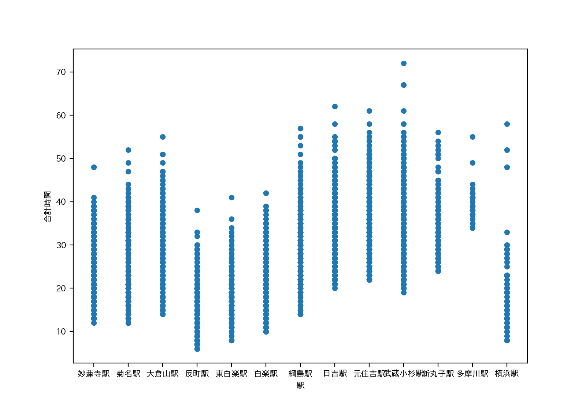
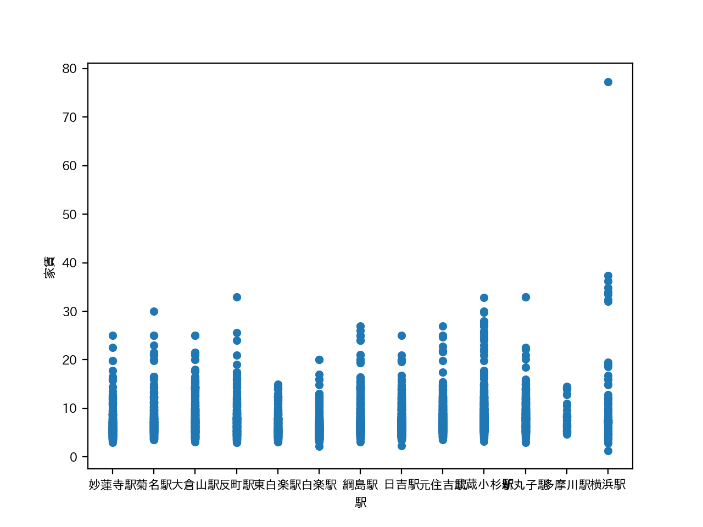
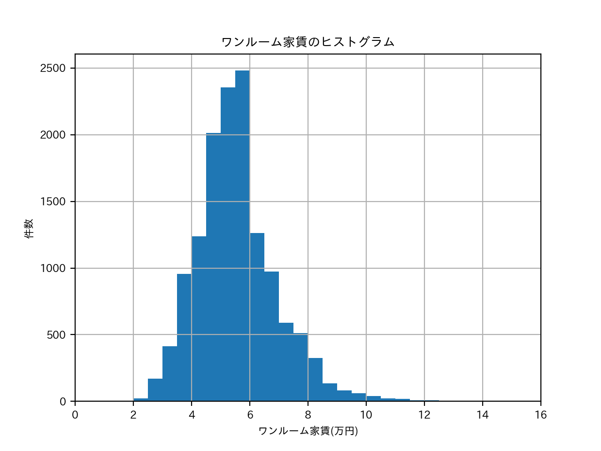
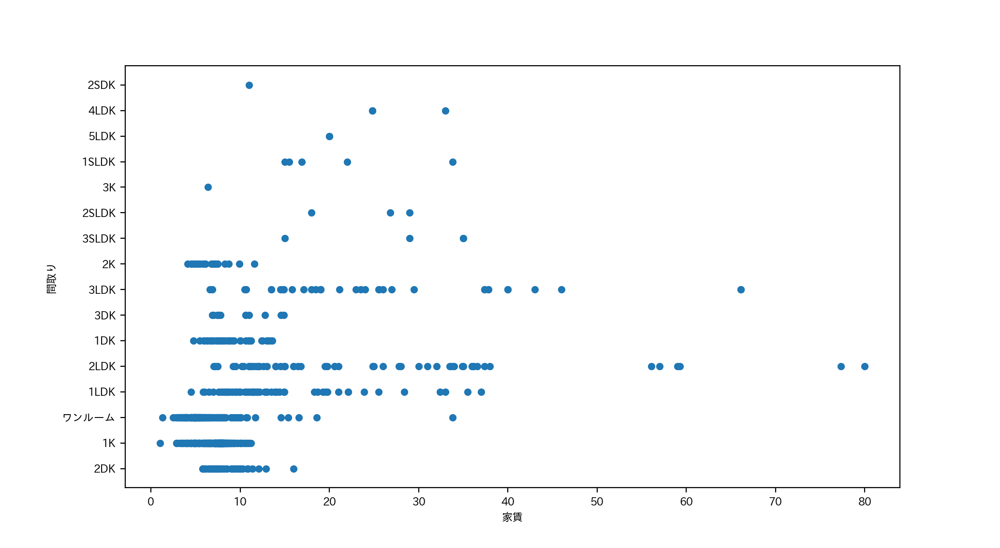
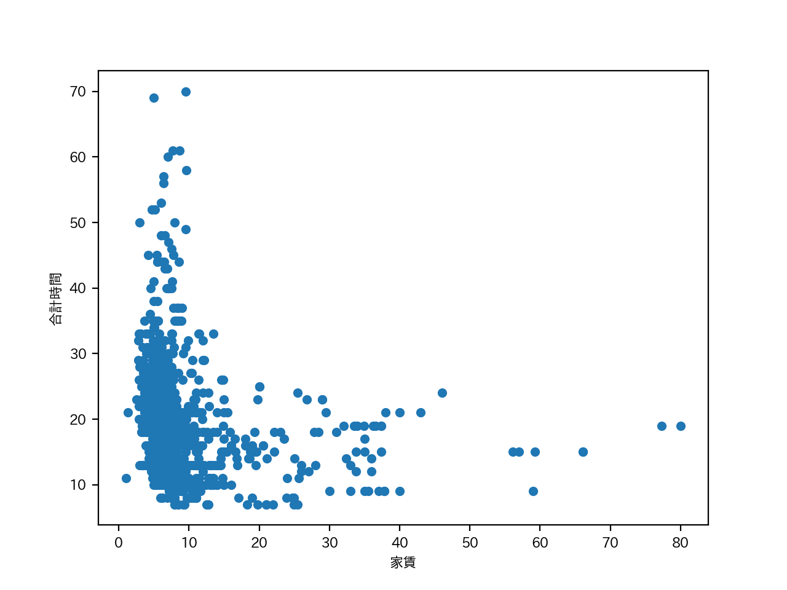

おすすめのエリア紹介
データ
「 '名称', 'カテゴリー', 'アドレス', 'アクセス', '路線',
'駅', 'バス停', '乗換時間', 'バス', '徒歩', '車', '合計時間', '築年数',
'構造', '階数', '家賃', '管理費', '敷金', '礼金', '間取り', '面積',
'URL'」
おすすめのエリアについて
その中で私は家賃と合計時間に重点を置いて検討していこうと考えた。
利便性を考え大学だけではなく東京にも気軽に行けるエリアがいいのではないかと考えた。
路線図（外部サイト）
この画像より東急東横線は渋谷まで繋がっているので東急東横線の駅周辺で探そうと考えた。


この画像よりあまり大差はなかった。しかし横浜駅と反町駅が一番合計時間が短い。
なので横浜駅の家賃や間取りなどについて調べてみることにした。

エリア全体のワンルームの家賃の相場を調べたところ４〜６万円が多かった。
横浜エリアでもこの範囲に値する家が存在するので横浜エリアに絞ることにした。


大学生の多くは一人暮らしなのでワンルームや１LDKの家は５万円以下で住める家もあるので良いのではないかと考えた。
また１０分以内で着く場所も多くあるので横浜駅がおすすめのエリアである。
ソースコード
- mask=(df_data["間取り"]=="ワンルーム")
- df_selected_roomtype=df_data[mask]
- df_selected_roomtype.loc[:, "家賃"].hist(range=(0,20),bins=40)
- plt.xlabel("ワンルーム家賃(万円)") # 横軸のラベル
- plt.ylabel("件数") # 縦軸のラベル
- plt.xlim(0, 16)
- plt.title("ワンルーム家賃のヒストグラム") # グラフのタイトル
- plt.show()
- -------------------
- mask = df_data["路線"] == "東急東横線"
- df_data[mask].plot.scatter(x="駅", y="合計時間")
- plt.show()
- mask = df_data["路線"] == "東急東横線"
- df_data[mask].plot.scatter(x="駅", y="家賃")
- plt.show()
- df_data[mask].plot.scatter(x="家賃", y="間取り")
- plt.show()
- df_data[mask].plot.scatter(x="家賃", y="合計時間")
- plt.show()